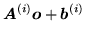

In the current implementation, adaptive training is only supported
with constrained MLLR as the transform for each speaker. As CMLLR is
implemented as one, or more, feature-space transformations. The
estimation formulae in section 8.8 are simplified
modified to accumulate statistics using
 for all the data from speaker  rather than
rather than
 . The update formula for
. The update formula for
 then
becomes
then
becomes
Specifying that adaptive training is to be used simply requires specifying the parent transform that the model set should be built on. Note that usually the parent transform will also be used as an input transform.